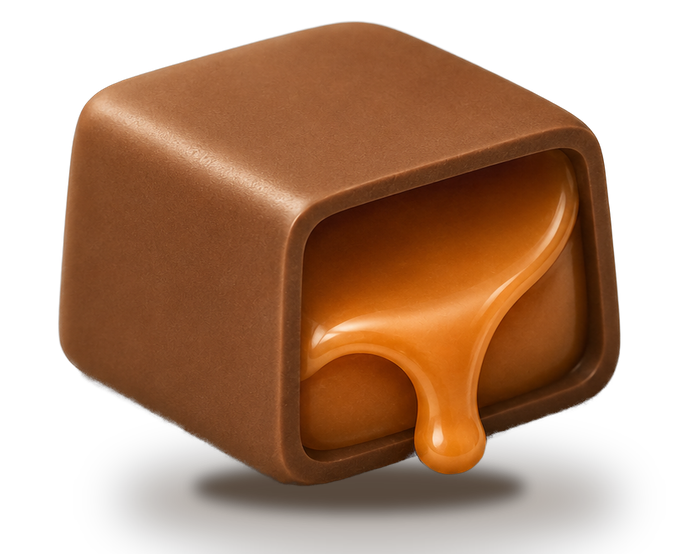

Your own media agent. Karamel turns your work into media in your voice, and shows you who's leaning in. An organic funnel ready for you to sell anything, anytime.
Perfect for
How it works
Nobody wants another dashboard. They want the one number that tells them if the work is working. So we built that.
True Reach
True Reach is the headline number: the people you can reach without a platform's permission who are also in a genuine two-way exchange with you. Your distribution is an asset. Watch it grow.
The guarantee
Karamel drafts, you approve, and nothing is ever automated for your audience. Every post and every reply waits in your queue until you say go. Change a word or kill it entirely. Nothing carries your name until you decide it does. That is the whole deal, and we will never change it.
Been heads down rebuilding onboarding around the one question users kept asking. Here is what changed, and why it took three tries.
It never posts on its own. You are always the one who publishes.

Karamel drafts. You approve. Nothing goes out until you say go.